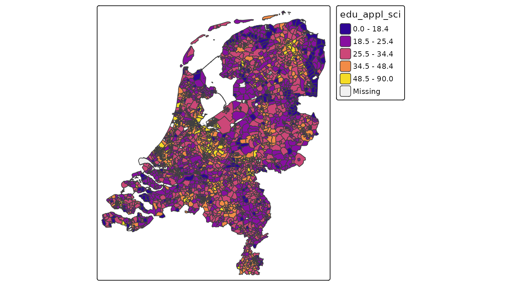

Introduction
Until version 4.3, it was only possible to visualize spatial data
stored in memory with tmap, e.g. objects from the class
packages sf, terra, or stars.
For instance, the dataset NLD_dist is an sf
object. A choropleth is created as follows:
library(tmap)
tm_shape(NLD_dist) +
tm_polygons(
fill = "edu_appl_sci",
fill.scale = tm_scale_intervals(style = "kmeans", values = "plasma"))
However, what if we have a huge remote data source that we would like
to visualize? With this package, tmap.sources it is
possible to specify tm_shape(url) with url
being the url of the remote dataset.
Currently only PMTiles, a remote tile-based data sources
are supported, but support for other remote data sources will be added
later. Obvious candidate file types: GeoParquet, FlatGeobuf, and Cloud
Optimised GeoTIFF (COG).
To run tmap.sources, besides tmap, another
package is required, namely tmap.mapgl,
because we require the tmap mode "maplibre":
library(tmap.mapgl)
library(tmap.sources)
tmap_mode("maplibre")
#> ℹ tmap modes "plot" -> "view" -> "mapbox" -> "maplibre"
#> ℹ rotate with `tmap::rtm()`switch to "plot" with `tmap::ttm()`Data processing
Important to realise is that the internal data processing in tmap is skipped entirely. So getting all the categoires (categorical scale), or retrieving the range and optimal interval breaks (interval scale) on basis on the complete data is not possbile, simply because it would take a lot of computation time (some remote datasets may cover trillions of objects). Instead, these scales are supported:
- As-is scale
tm_scale_asis, in which the visual values (e.g. color values) are already contained in the data. - The categorical scale
tm_scale_categorical, where the data contains the levels. The user has to specify the used mapping, so a vector of levels and a vector of correspoding visual values (e.g. colors). And optionally a vector of corresponding labels (in case they differ from levels). - The continuous scale
tm_scale_continuousis used to scale the height of 3d polygons.
Other scales, in particular numeric scales (both interval and continuous) will be added later.